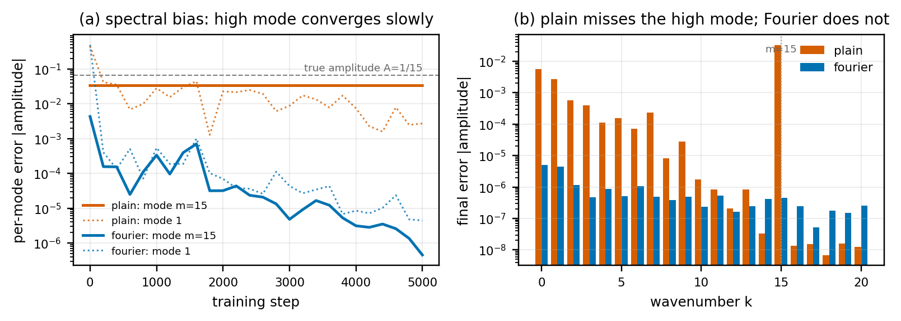

Fourier vs plain PINN: catching the fine detail
Two physics-informed networks, same target, same budget, same physics loss. One stays blind to the fine detail. The other catches it.
What decides it
The only difference between the two networks is how the input coordinate is represented: a single base frequency, or a Fourier-feature encoding across many frequencies. That one choice decides whether the high-frequency structure survives training. It is also why Fourier ideas are underrated for scientific machine learning.

The bigger picture
This is the intuition behind a controlled benchmark on where Fourier representations beat local ones for partial differential equations, and where they do not (shocks are the honest counter-case). Code, the IEEE whitepaper with documented results, and this demo live in the repository.